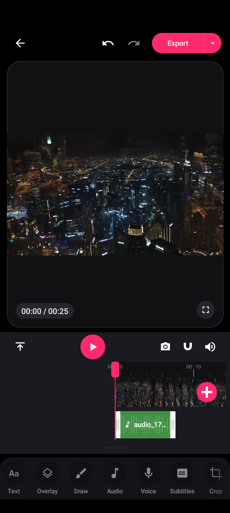
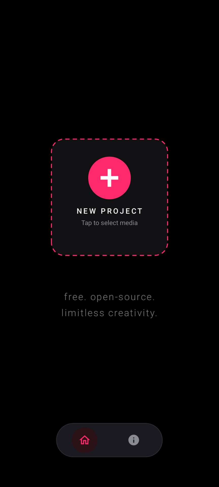
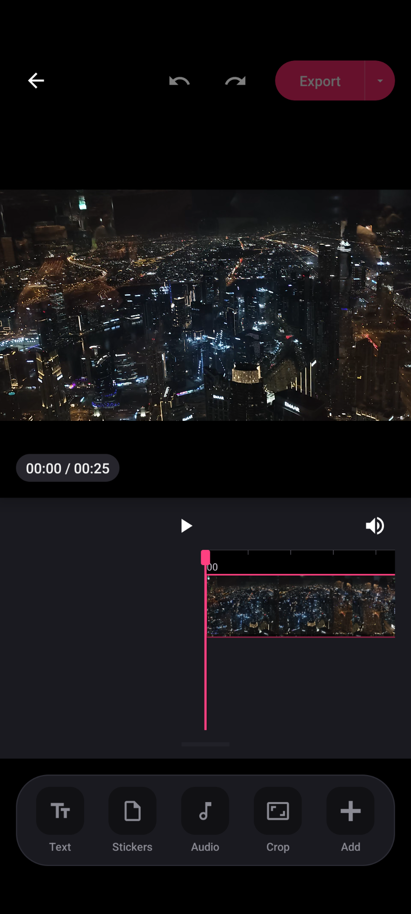
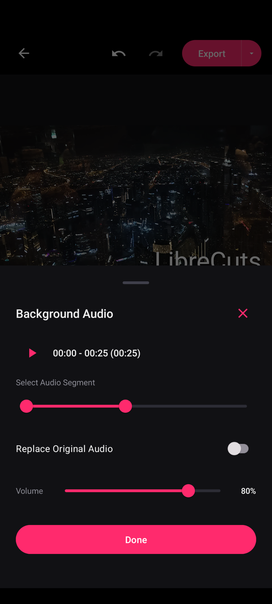
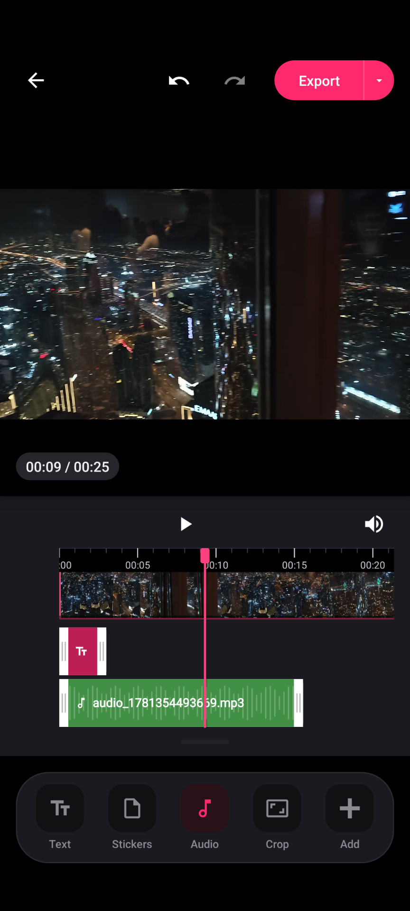

Free, Open Source Video Editor for Android. No Watermarks. Privacy First.
LibreCuts is a free, open source video editor for Android that prioritizes simplicity, efficiency, and privacy. Built for seamless performance, it empowers creators to easily select, edit, and export watermark free videos locally on their device.

Powerful Core Features
Everything you need to edit high-quality videos locally, without cloud processing or licensing restrictions.
Precision Multi Track Timeline
Frame perfect control over your sequence. Trim, split, and merge multiple video segments with snap to timeline functionality. Add overlay tracks for images, stickers, text, and voice clips.
Hardware Accelerated
Super fast exports powered by device level hardware `h264_mediacodec` encoding. Automatic fallback to software encoding guarantees maximum compatibility.
Chroma Key & Masking
Remove backgrounds from any media overlay using a configurable green screen color picker. Apply circles, rectangles, and custom mask shapes to overlay tracks.
Keyframe Animation
Animate your media and text overlays dynamically across the screen. Move, scale, and spin elements with a simple, touch based timeline keyframe manager.
Interactive Subtitles
Import custom `.srt` subtitle files. Position, resize, and style text layouts directly on the live preview screen using intuitive drag gestures.
Audio & Voice Studio
Import background audio, record voice overs, apply ducking, fades, and scale volume up to 200%. Export your final audio mix directly to a standalone MP3 file.
100% Offline & Privacy First
LibreCuts does not request internet access permission. Your videos, audio files, and exports never leave your device. Zero telemetry, zero tracking, zero data collection.
And So Much More...
Packed with essential creator tools & an expanding mobile editing feature set.
Visual Showcase
A clean and native Android user interface designed for efficiency.




Help Translate LibreCuts
LibreCuts is built for creators everywhere. Help bring LibreCuts to your native language by contributing translations on Hosted Weblate!
Keep Android Open
Google's developer policy mandates centrally register developers, threatening user privacy and FOSS sideloading. We stand with the movement to defend open platforms.
Support LibreCuts
LibreCuts is built with passion and provided completely free. If this app helped you create, consider supporting its continued development!